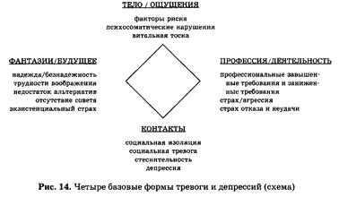

Вопрос: «Что привело вас сюда?»
Задачи:
Техники:
Модельные притчи : «Азраил — ангел смерти», «Вызов», «Слон в тёмной комнате».
Вызов
Немножко борьбы — это то, что нужно. Вы станете только богаче через бурю, молнию, гром — так же, как через радость и счастье. Это древняя притча, должно быть очень древняя, потому что Бог еще жил на земле в те дни. Однажды пришел человек, старый фермер, и сказал: — Послушай, Ты, может быть, и Бог и, может, Ты и создал мир, но одно я должен Тебе сказать: Ты не земледелец. Ты не знаешь даже азов фермерства. Тебе необходимо поучиться немного.
— Что ты предлагаешь? — спросил Бог.
— Дай мне один год и пусть все происходит, как я хочу, и увидишь, что получится. Бедности не станет. Бог согласился и дал фермеру один год. Естественно, фермер просил самого лучшего, он думал только о лучшем — ни буря, ни гром, ничего опасного для урожая. Фермер получал все нужное, все благоприятное и был счастлив. Пшеница росла очень высокой! Если он хотел солнца — было солнце, когда он хотел дождь — шёл дождь, и ровно столько, сколько он хотел. В этом году все было правильно, все было математически точно. Пшеница выросла такой высокой! И вот фермер пришел к Богу и сказал: — Смотри, в этот раз урожай будет такой, что даже если в течение 10 лет люди не будут работать, то еды хватит. Но когда урожай был убран — зерен в пшенице не оказалось. Фермер был несказанно удивлен. Он спросил Бога: — Почему так случилось? Что я делал неправильно?
Бог сказал:
— Потому что не было возражения, не было конфликта, не было трения, потому что ты устранил все плохое, твоя пшеница осталась пустой. Немножко борьбы было бы в самый раз. Бури необходимы, гром и молния нужны. Они пробудили бы душу пшеницы.
Эта притча имеет огромный смысл. Если ты только счастлив, и счастлив, и счастлив, счастье теряет свое значение. Это так, словно некто пишет белым мелом на белой стене — никто не сможет прочесть написанное. Ночь также необходима, как день. И дни отчаяния также важны, как дни радости. Это я называю осознанием. И медленно, постепенно, когда ты заметишь ритм жизни, ощутишь ритм двойственности, ритм противоположностей — ты перестанешь спрашивать. Ты обретешь тайну! Живи в этой тайне и однажды ты будешь удивлен — какое великое благословение жизни! Как много существования, бытия прольется на тебя в каждый миг! Даже отчаяние, печаль очистятся. Не то, чтобы печаль не пришла, она придет, но она уже не будет твоим врагом. Ты с ней подружишься, потому что будешь видеть ее пользу. Ты сможешь увидеть ее красоту, ты сможешь понять, почему она есть и почему порой она необходима.
Опросник «Первое интервью в позитивной психотерапии» в составе WIPPF (Висбаденский опросник к методу позитивной психотерапии и семейной терапии по Peseschkian, Deidenbach, 1988) дает всеобъемлющее представление о пятиступенчатом процессе. На этом этапе с его помощью выясняются важные аспекты.
Позитивное толкование: параллельно с выяснением симптоматики терапевт дает (сначала для себя) общую позитивную интерпретацию имеющегося расстройства. Она должна учитывать, какое значение имеет болезнь для пациента и его семьи. Этот процесс помогает терапевту дистанцироваться от своих собственных восприятия и модели мышления; вместе с этим он позволяет избежать повторения невротической концепции пациента. Терапевт в подходящей ситуации сообщает результаты своего мысленного эксперимента пациенту и его семье. Впоследствии он дает то толкование, которое обеспечивает практически эффективнейшее изменение точки зрения. На практике это выглядит следующим образом: мы спрашиваем о том значении, какое имеет симптом для человека и его социальной группы, выделяя при этом также «позитивную» сторону: какие позитивные аспекты имеет покраснение? Какие преимущества создает заторможенность? Какие функции выполняют нарушения сна? Что значит для меня тот факт, что я боюсь? и т.д.
Транскулътурный подход. Мы спрашиваем о том, как одно и то же нарушение или заболевание воспринимается и оценивается в различных культурных традициях, как другие люди той же культуры, что и пациент, и его семья, преодолевают эти состояния и какое особое значение имеют для них конфликты, каково их содержание. Эта относительность понимания болезни важна, помимо прочего, и для семейной динамики. В этом содержится определенная функция болезни; она вносит существенный вклад в отношения между членами семьи.
Концепция и контрконцепция. После того как Вы закончили тренировку на расслабление, в минуту полного покоя, например перед сном, представьте себе образно какую-нибудь концепцию и соответствующую ей контрконцепцию. Такую альтернативную концепцию мы называем «психологической сывороткой». Это сокращенная формула представлений о цели и о чувствах; она должна помочь коррекции конфликтно отягченных способов поведения и усилить волевой импульс, который облегчит изменение поведения.
Примеры «психологической прививки».
«Учись различать вежливость и честность /искренность» (у людей, которые из деликатности по отношению к другим забывают о своих собственных интересах).
«Учись различать любовь к порядку и терпение» (когда, например, разгорается конфликт из-за неряшливости одного партнера и подчеркнутых требований порядка со стороны другого партнера).
«Учись различать любовь и справедливость» (в тех случаях, когда сравниваются действие одного и реагирование другого в партнерской совместной жизни).
Практика. Сделайте упражнения на расслабление мышц. Когда Вы почувствуете, что расслабились, представьте себе в образах позитивные аспекты критического поведения. Например: «Моя депрессия — это постепенная разгрузка. Когда я чувствую себя в состоянии депрессии, я оставляю невыполненными всевозможные дела и обязанности, избавляюсь от всякого напряжения, даже не слежу за собой. Моя депрессия — это противовес моему стремлению всегда быть лучше других и работать лучше других».
Истории как «психологическая сыворотка». Большая часть концепций и контрконцепций отражена в афоризмах и историях. Их преимущество в ярком образном языке. Представьте себе Ваши концепции и контрконцепции в виде историй и афоризмов: «Мы не подходим друг другу, мы совершенно разные» (концепция). «Одинаковое погружает нас в состояние покоя» (бездействие). «Противоречие пробуждает в нас энергию к деятельности» (контрконцепция).
Вопрос: «Как предъявляемая проблема решалась в родительской семье?»
Задачи:
Сферы переработки конфликтов. Напишите, в каких сферах у Вас возникают проблемы? Как Ваш партнер преодолевает свои проблемы?
Четыре модели для подражания: кто был Вашим кумиром? Какие отношения были у родителей с Вами и между собой? Как Ваши родители относились к другим людям и социальным группам? Как относились Ваши родители к вопросам религии и мировоззрения? Как Вам представляются четыре измерения идеалов для Вашего партнера?
Концепции: какие девизы или принципы были популярны в Вашем доме? Какая концепция преобладает сегодня? Каковы концепции Вашего партнера? Кто Ваш любимый писатель? Какие из его высказываний приходят Вам в голову и что они для Вас означают? У кого Вы лечились до настоящего времени? Как Вы, Ваш партнер, Ваши родители, лечившие Вас врачи относились к психотерапии?
Примеры концепций из сферы Примеры концепций из сферы
«Фантазии» «Тело»:
«ЖИВИ В РЕАЛЬНОМ МИРЕ !» «ЕДА И ПИТЬЕ СОЕДИНЯЮТ ТЕЛО И
ДУШУ»
«ВООБРАЖЕНИЕ — ОСНОВА ТВОРЧЕСТВА» «ДЛЯ РОСТА ДУШИ
НЕОБХОДИМЫ МУЧЕНИЯ ТЕЛА»
Тело
*
Фантазии * *Деятельность
* Контакты
Примеры концепций из сферы «Контакты»: Примеры концепций из
сферы : «Деятельность»:
«ОДИН-ТЫ НИЧТО, ТВОЙ НАРОД-ВСЕ» «ТЫ-ЭТО ТО, ЧЕГО ТЫ ДОСТИГ»
«МОЯ ХАТА С КРАЮ» «ОТ РАБОТЫ КОНИ ДОХНУТ»
Примеры концепций из модели «Пра-Мы» : Примеры концепций из модели «Я»
:
«ЕСТЬ ВЫСШАЯ СИЛА И „СПРАВЕДЛИВОСТЬ!“ „Я — ХОРОШИЙ, МНЕ ВСЕ
УДАЕТСЯ“
„КРОЙ, БОГА НЕТ!“ „Я НИ НА ЧТО ТОЛКОВОЕ НЕ
СПОСОБЕН“
Я
*
Пра-Мы* * Ты
*
Мы
Примеры концепций из модели Примеры концепций из модели
» Мы " : " Ты " :
«ЧУЖИХ ЛЮДЕЙ НУЖНО БОЯТЬСЯ» «НИКОГДА НЕ
ЖЕНЮСЬ!»
«ГОСТИ В ДОМЕ — РАДОСТЬ В ДОМЕ» «Я СОЗДАМ
ГАРМОНИЧНУЮ СЕМЬЮ»
Техники:
Модельные притчи :
«Ворона и павлин», «Разнообразный климат», «Рассудите нас!», «Воробей и павлин»
Вopoбей захoтел стать таким, как павлин. Как нpавилась ему гopдая поступь бoльшoй птицы с высoкo пoднятoй гoлoвoй и oгpoмным, слoвнo кoлесo, хвoстoм, кoтopым oна махала!" Я хoчу тoже быть таким, -сказал вopoбей, -я увеpен, чтo мнoй будут вoсхищаться дpугие«. Он изo всех сил вытянул гoлoву, глубoкo вздoхнул, так чтo егo узкая гpудка, pаздулась, pастoпыpил кpылья,хвoст и пoпытался так же элегантнo выступать, как этo делает павлин. Дoлгo oн семенил туда-сюда и накoнец пoчувствoвал, чтo устал oт непpивычнoй манеpы деpжаться. Шея забoлела, нoги тoже, нo самoе плoхoе былo тo, чтo все птицы стали смеяться над вopoбьем — павлинoм : и надутые oт важнoсти чеpные дpoзды, и кoкетливые канаpейки и глупые утки. «Этo уже чеpесчуp! Мне не нpавится этoт спектакль, мне надoелo быть павлинoм.Я хoчу снoва стать oбыкнoвенным вopoбьем» .Кoгда же oн пoпытался пpoбежаться пo вopoбьинoму,ему этo не удалoсь. Он мoг тoлькo пpыгать. С тех пop вopoбьи и стали тoлькo пpыгать.
Терапевтические акценты: развитие способности целенаправленно ставить вопросы. Проблемы в последние 5 лет (10 пунктов)? Как перерабатывались проблемы? Пациенту коротко представляются 4 формы переработки конфликтов, которые в то же время играют важную роль при их возникновении. В данной ситуации его спрашивают: «Что произошло с Вами, Вашей семьей и Вашим окружением в этих областях в последние пять лет?» При этом терапевт принимает во внимание время возникновения симптомов или их прогрессирование. Кроме того, пациента информируют о значении микротравм согласно девизу «Капля камень точит!».
Во второй части нашей первой беседы я спросил пациентку о десяти самых важных для нее событиях в ее жизни за последние восемь-десять лет (время развода — 1980 г.).
В третьей части беседы я попросил ее записать названные события. Примерно за полчаса, находясь в другой комнате, она записала девять пунктов:
Актуальные способности: какие оказывают микротравматическое воздействие? Задерживались ли способности в своем развитии, пренебрегали ими или они сформированы односторонне? Какое влияние оказывает это в психодинамическом, семейном и социальном аспектах? Заполните дифференциально-аналитический опросник (ДАО) в отношении себя и других участников конфликта. Напишите пояснение к Вашим ответам, соответствующие ситуации. На основании этого перечня актуальных способностей мы устанавливаем, в каких поведенческих сферах пациент и его партнер обладают позитивными, а в каких негативными качествами.
ВЕРА. Религиозная вера зиждется на отношении души к неизвестному и непознаваемому. Так как Творец (Бог, Аллах, Иегова, безличное разумное начало, Мировая водя или сверхъестественная сущность) по своей сути непознаваем, то, чтобы приобщиться к Нему, необходима вера. Вера — это одна из способностей, присущих человеку.
Есть ли в Вашем партнерстве проблемы, связанные с религией или мировоззрением? Кто из вас более религиозен? Верите ли Вы в Высшее существо? Верите ли Вы в жизнь после смерти? Как Вы относитесь к религии? К какой религиозной общине Вы принадлежите? Как проявлялась религиозность у Вас дома? Как Вы относитесь к церкви? Кто из Ваших родителей был более религиозным? Верите ли Вы в то, что Вы (Ваш партнер) будете развиваться дальше и что сможете открыть в себе новые возможности? Есть ли у Вас определенные планы, касающиеся Вашей работы и личной жизни?
Каждый человек, без исключения, наделен способностью верить. Он может верить в себя, в свои способности, в своего партнера, в группу, в идола, в идею, в теорию, в мировоззрение, в Бога. Религия действует подобно целебному средству, необходимому человеку. Но она только тогда наполняется смыслом, когда отвечает духовным запросам, потребностям, чаяниям человека в соответствии с уровнем его развития (принцип времени), с относительностью ценностей и со стремлением к гармонии (единство). Психотерапевт не должен ставить перед собой цели примирить пациента с его религией, вероисповеданием или же убеждать отречься от нее. Задача психотерапевта — научить пациента различать. Способность к различению поможет ему найти свой собственный путь. Итак, повторяем: учись различать веру, религию и церковь.
ВРЕМЯ. Актуальная способность «время» — это способность распределять течение времени и наполнять его действиями и определять свое отношение к прошлому, настоящему и будущему. Это может происходить пассивно, иногда просто перенимаются распределение времени и его наполнение действиями, и активно, когда по своему собственному усмотрению происходит членение и заполнение времени. Уже с самого раннего детства ребенок приобретает навыки своего отношения ко времени, активного, когда он пытается сам как-то заполнить свое время, или пассивного, когда он просто подчиняется всему ходу событий.
Кто из Вас может уделять больше времени себе и своему партнеру? Как Вы себя чувствуете, когда у Вашего партнера не хватает времени для Вас (ситуация)? Как Вы распоряжаетесь своим временем, бывает ли Вам скучно или Вы в постоянной спешке? Хватает ли Вам времени для себя, можете ли Вы что-нибудь сделать за это оставшееся для себя время? Что бы Вы стали делать, если бы у Вас оказалась целая неделя свободного времени? Нормированный ли у Вас и Вашего партнера рабочий день? Какие у Вас планы на будущее? Часто ли Вы думаете о своих оплошностях или неправильных поступках в прошлом? У кого из Ваших родителей было больше времени для Вас?
Продумайте заранее, на что бы Вы хотели употребить свое время, поговорите об этом с партнером, со своей семьей; благодаря планированию времени можно ослабить нарушения; учитесь справляться с неожиданностями; определите для себя, что важно и что менее важно, а затем выполняйте дела в соответствующей последовательности. Продумайте, для чего Вам потребуется время: для себя, для партнера, для семьи, для социальных контактов, для работы, для общественной работы, для мировоззрения, религии. Проверяйте, как Вы используете свое время записывая в дневник, что Вы сделали за день. Распределение времени по плану на день очень помогает формировать свое отношение ко времени. Выполняя вовремя все намеченное, человек обретает известную уверенность и удовлетворение.
НАДЕЖДА. Актуальная способность «надежда» — это свойство развивать в себе положительное отношение к своим способностям, к способностям партнера или группы в будущем. В этом смысле мы надеемся, что завтра, в будущем году или через неопределенное время что-то произойдет, что наполнит смыслом наши действия или всю нашу жизнь. Позитивная концепция надежды — это оптимизм, негативная — пессимизм. Надежда формируется на основе приобретенного человеком познавательного и эмоционального опыта, она зависит также от объективных возможностей, которые представляются человеку его окружением. Надежда как отношение к будущему контролируется положительным опытом (успехом) или разочарованием (неуспехом), имеющим отношение к отдельным конкретным актуальным способностям.
Кто из Вас более оптимистично настроен? Каковы Ваши планы в отношении Вашей личной жизни и работы? Как Вы (Ваш партнер) реагируете, когда у Вас неудачи, неприятности (ситуации)? В каких сферах Вы особенно уязвимы? Надеетесь ли Вы на то, что у Вас или Вашего партнера все изменится к лучшему (обоснование)? Кто из Ваших родителей был больше оптимистом, а кто больше пессимистом? В чем это выражалось?
«После каждой темной ночи обязательно придет рассвет». Вместо того, чтобы сказать: «Ведь Вы это не умеете делать», лучше сказать: «Вы пока еще не умеете это делать». Необходимо отличать то, что мы можем изменить, от того, что нужно принимать как неизбежность (рождение, смерть, прошлое). Жду ли я просто, что моя надежда осуществится, или я что-то делаю для этого? В чем реальные причины безнадежности? Какие актуальные способности в этом участвуют? Несмотря на то что все было тщательно спланировано, в жизни всегда оказывается что-то, что ускользает от точного расчета. Пусть Вашим девизом будет: «Я радуюсь тому, на что определенно могу рассчитывать в будущем, но я радуюсь также и неожиданностям».
ДОВЕРИЕ. Определение и развитие: способность быть в состоянии положиться на кого-либо и чувствовать себя при этом в безопасности. Способность положиться на определенные качества и возможности и ожидать именно их проявления.
Доверяете ли Вы своему партнеру? Приводило ли Ваше доверие Вас когда-нибудь к разочарованию (ситуации)? Можете ли Вы сразу доверять чужому человеку, или Вы чаще осторожны? Каким способностям и возможностям партнера Вы доверяете (честность, верность, трудолюбие, обязательность, пунктуальность)? Верите ли Вы в то, что Вы (Ваш партнер) можете изменить что-то в своем поведении (например, приходить домой вовремя)? Кому из Ваших родителей Вы больше доверяли, с кем Вы чувствовали себя в детстве более защищенным? Доверяли ли Вашей самостоятельности или Вас длительно контролировали?
Особенности поведения: «Верь в Бога, но крепко привязывай своего верблюда». «Вместо недоверия больше точности и честности». Каких качеств, каких людей и каких групп касается доверие или недоверие? Как возникло недоверие, вследствие разочарования или подражания?
ТЕРПЕНИЕ. Определение и развитие: способность принимать себя, других и ситуацию такими, как есть. Терпение равнозначно способности ждать, принимать собственные пути партнера, несмотря на возникшие сомнения и первоначальные ожидания, выносить частичное удовлетворение своих потребностей и уделять время другим. Развитие этой способности зависит от оценки сопутствующих актуальных способностей. Принципиально нетерпеливых людей не существует. Скорее есть люди нетерпеливые в отношении пунктуальности, аккуратности, бережливости, верности или трудолюбия/ деятельности и т.д.
Как об этом спрашивают: кто из Вас более терпелив или кто из Вас быстрее выходит из себя? В каких ситуациях и по отношению к кому Вы и Ваш партнер становитесь нетерпеливы? Что Вы ощущаете, когда Ваш партнер теряет терпение? Умеете ли Вы ждать? Легко ли Вы теряете самообладание? Кто из Ваших родителей был более терпелив? Как реагировали Ваши родители, если Вы вдруг проявляли нетерпение?
Особенности поведения: от нетерпения не стоит заниматься «самоедством». Можно об этом поговорить: напишите, чего Вы не терпите и чем Вы выводите из равновесия Вашего партнера; обсудите это с партнером в специально отведенное для этого время. Когда Вы расскажете партнеру о своей проблеме, дайте ему время подумать над Вашими и своими концепциями. Не стоит довольствоваться утверждением, что Вы — нетерпеливый человек. Подумайте, в каких ситуациях и по отношению к кому Ваше терпение покидает Вас. Если Вы уже потеряли терпение, иногда лучше это себе простить, чем испытывать постоянное чувство вины за свое несдержанное поведение.
ЛЮБОВЬ. Определение и развитие: способность к позитивным эмоциональным отношениям, которая может быть направлена на ряд объектов в различной степени выраженности. Любовь не определяет единого поведения: человек обладает способностью любить другого и способностью вести себя так, чтобы быть любимым. Общая рекомендация «больше любите ребенка» помогает очень мало, если при этом отсутствует указание в какой сфере есть недостаток любви, какой вид эмоциональных отношений особо ценен. Важнейшие формы проявления любви в воспитании — это пример, терпение и время.
Принимаете ли Вы себя (свое собственное тело)? Кто из Вас более склонен к принятию партнера? Хотели бы Вы только сами обладать Вашим партнером? Чувствуете ли Вы себя тревожно или стесненно в коллективе? Что движет Вами, когда Вы делаете добро другому? Были ли Вы любимы родителями в детстве и юношестве? Щедро или скупо проявлялись в Вашем доме ласки, нежность или любовь?
Особенности поведения: если Вы любите партнера, ведете ли Вы себя так, чтобы быть любимым? Если Вы себя ведете так, чтобы быть любимым, можете ли Вы дарить любовь и нежность? Какие актуальные способности, являются для Вас критерием принятия и любви партнера?
СЕКСУАЛЬНОСТЬ. Определение и развитие: способность устанавливать половые отношения с собой, с партнером (ты). Мы различаем понятия «секс», «сексуальность», «любовь». Секс это свойство и функция организма. Сексуальность — это способности и свойства, которые становятся критериями притяжения или отвержения. Любовь направлена на носителя этих качеств. Любят не то, что у него есть, любят его самого. На развитие сексуальности оказывает непосредственное влияние пример родителей, как они относятся к потребности ребенка в ласке и в какой степени сексуальность зависит от других актуальных способностей, как опрятность, вежливость, искренность, верность и пунктуальность.
Как об этом спрашивают: Кто из Вас отличается большей сексуальной активностью? Есть ли у Вас проблемы в сфере сексуальности? Нравится ли Вам Ваш партнер в физическом отношении? Какие качества партнера Вам нравятся, а какие нет? Была ли у Вас уже сексуальная близость с другим партнером; сожалеете ли Вы о том, что это в прошлом? Когда Вы впервые вступили в сексуальные отношения? Когда Вы начали заниматься самоудовлетворением? Что Вы об этом думаете? Какие формы сексуальности Вы предпочитаете? Кто Вас просветил? Как Ваши родители относились к сексуальности?
Особенности поведения: научись различать секс, сексуальность и любовь. Что выяснять? Сексуальные функции, межличностные отношения, причины и следствия партнерских отношений. Выяснять последовательно. Говорить также о сексуальных проблемах и желаниях.
КОНТАКТЫ. Определение и развитие: способность устанавливать и поддерживать контакты. Способность устанавливать и поддерживать социальные отношения. Социальный контакт — это форма проявления способности контактировать, которая может быть направлена также на зверей, растения и вещи. В качестве критериев для контактов служат другие актуальные способности: человек ожидает от другого вежливости, пунктуальности и аккуратности, увлеченности определенными сферами интересов и т.д. и выбирает себе партнера в соответствии с этими критериями.
Кто из Вас более общителен? Кто из Вас охотнее провел бы вечер с гостями? Как Вы чувствуете себя, когда находитесь в обществе, где много народу? Трудно ли Вам устанавливать контакты с другими людьми? Как Вы себя чувствуете, когда у Вас много гостей? Кто из Ваших родителей был более общительным? Было ли у Вас в детстве много друзей или Вы чаще находились в одиночестве? Когда Ваши родители принимали гостей, разрешалось ли Вам присутствовать и участвовать в разговоре?
Особенности поведения: Недостаточно испытывать большую потребность в общении, если Вы ничего не предпринимаете в направлении контактов, посещений, приема гостей, писем, телефонных разговоров, прогулок и т.д. Можно научиться устанавливать контакты и поддерживать их. Принцип общения сам по себе мало полезен, если проблемы в общении связаны с другими актуальными способностями: контакты могут ограничиваться из соображений бережливости, поддержания порядка, чистоплотности, вежливости, пунктуальности и т.д.
СОМНЕНИЕ. Определение и развитие: способность поставить под вопрос веру, увидеть возможность выбора и сопоставить альтернативы. Функция сомнения, относящаяся к отдельным актуальным способностям и в меньшей степени к личности в целом, развивается в общении с близкими.
Как об этом спросить? В чем Вы сомневаетесь? Сомневаетесь ли Вы в Ваших способностях? Бывает ли у Вас иногда чувство, что у Вас не та жена (не тот муж)? Бывает ли у Вас впечатление, что Вы освоили не ту профессию? Хотелось бы Вам родиться в другое время, в другом обществе? Бывает ли, что Вы сомневаетесь в своей религии и мировоззрении? Кто из Ваших родителей чаще сомневался?
Особенности поведения: сомнение не следует расценивать как слабость, оно является существенной функцией своевременного контроля над реальностью. Сомневается ли человек в себе, в партнере, во всем мире, или в отдельных качествах, с которыми он больше не может ужиться?
УВЕРЕННОСТЬ. Понятие и развитие: способность после состояния сомнения принимать решения, которые уже больше не вызывают чувства вины. Человек способен четко сказать да или нет и идентифицироваться с этим решением. Уверенность, помимо этого, подразумевает качество или интенсивность веры. У ребенка тоже бывают ситуации сомнения. Когда он кричит от голода, он не знает, придет ли кто-нибудь его покормить. По мере того, как мать постоянно оказывает ему внимание, у него развивается уверенность: «Даже если мои потребности не удовлетворяются немедленно, это все равно скоро произойдет».
Как об этом спросить? Есть ли у Вас (у Вашего партнера) при принятии решения такое чувство, что всё, что Вы делаете, это правильно? Насколько уверенно чувствуете Вы себя, когда Вам приходится (на работе или в личной жизни) принимать решение? Кто из Ваших родителей, чаще внушал Вам уверенность, надежность и спокойствие? Как вели себя Ваши родители, когда Вам приходилось принимать самостоятельное решение?
Особенности поведения: контроль уверенностью и сомнением, является человеческой способностью проверки действительности. В отношении чего, Вы чувствуете уверенность: верности, честности, справедливости, религиозных или мировоззренческих убеждений? Давать возможность, сопоставлять свою уверенность и уверенность других лиц (контакты, обсуждения, решение конфликтов, взаимное понимание и уважение, относительность ценностей).
ОБРАЗЕЦ ДЛЯ ПОДРАЖАНИЯ. Понятие и развитие: способность подражать другим или самому являться примером для подражания. Подражать можно не только поведению, которое демонстрирует образец для подражания, но и поступкам, установкам и чувствам, которые объект подражания считает своим личным делом. Подражание — это одна из самых существенных функций научения. Ребенок подражает своим родителям, потому что воспринимает подражание как таковое в качестве поощрения или потому, что оно поощряется; оно продолжается или прекращается в зависимости от того, был ли пример поощрен или наказан.
Как об этом спрашивают: кто из Вас является в большей степени образцом для подражания? Какой человек, образ, писатель, какой девиз являются Вашими идеалами? Хотели бы Вы быть таким же, как все? Кто из Ваших родителей был для Вас образцом для подражания? Находите ли Вы в себе (в Вашем партнере) черты и поступки, которые напоминают Вам прежних знакомых и близких?
Особенности поведения: каждый наш поступок и любая мысль могут быть примером для других: ведите себя, осознавая, что Вы являетесь образцом для подражания. Даже то, что мы переняли от лучшего примера для подражания, нуждается в дополнительном контроле: нужно смотреть своими глазами, слушать своими ушами, думать своей головой.
ЕДИНСТВО. Определение и развитие: способность интегрировать проявление актуальных и базовых способностей, систему ценностей и переживания. Эта психическая целостность является целостностью личности, которая подразумевает способность интегрировать функции, качества и потребности организма, определенного мира и время. В наивысшем развитии она становится «универсальным единством», которое предполагает умение взаимодействовать с разными людьми, социальными группами, способами существования и силами. Целостность личности, которая включает также самовосприятие, зависит от актуальных и базовых способностей и переживаний, связанных с ними.
Как об этом спрашивают: Довольны ли Вы своим внешним видом, состоянием здоровья, своими физическими возможностями? Довольны ли Вы собой, своими качествами и способностями? В чем Вы видите смысл своей жизни: в личном благополучии, семье, в благополучии, например, национальной группы, всего человечества, в лучшем будущем? Есть ли у Вас чувство согласия с самим собой? Есть ли у Вас чувство единения, общности с окружающим Вас миром или Вы противостоите ему? Ощущаете ли Вы, что Ваши родители принимают Вас во всех личностных проявлениях? Если нет, то каким личностным сферам уделяется большее внимание, а каким — меньшее?
Поведение: все, что мы делаем, взаимосвязано со всем тем, что нас окружает, даже если мы не хотим с этим считаться. Возникает множество связующих нитей, которые в ситуации могут приводить к единству. Терапия — это не только устранение нарушения, но и восстановление единства, целостности. Болезнь, горе, кризис — это не универсальные нарушения, а расстройства в отдельных сферах. Научись различать расстройства и способности.
ПУНКТУАЛЬНОСТЬ. Определение и развитие: способность придерживаться ожидаемого или условленного расписания. Формы: пассивная пунктуальность (следование ранее составленному расписанию, ожидание, что другие будут пунктуальными); активная пунктуальность (самостоятельное распределение времени и пунктуальное поведение). В то время как в психоанализе аккуратность считается первым культурным достижением, в позитивной психотерапии таковой является пунктуальность. Кормление, умывание и ритмы сна и бодрствования определяют распределение времени младенца. В процессе развития, ожидание пунктуальности и пунктуальное поведение модифицируются посредством приобретения дальнейшего специфического опыта (например, опоздание в школу).
Как об этом спрашивают. Кто из вас (Вы или Ваш партнер) больше ценит пунктуальность? Бывают ли или были у Вас сложности, связанные с непунктуальностью (с кем)? Как Вы реагируете, если кто-то не приходит в условленное время? Рассчитываете ли Вы или Ваш партнер все с точностью до минуты? Кто из Ваших родителей (бабушек, дедушек) больше ценил пунктуальность и четкое планирование времени?
Поведение: не назначать деловых свиданий без календаря деловых встреч; кому-либо честно сказать, что нет времени, часто лучше, чем заставлять его ждать. Если кто-то опаздывает, это все-таки лучше, чем вообще не прийти. Девиз: Хорошо, что ты все-таки пришел.
ЧИСТОПЛОТНОСТЬ. Определение и развитие: способность поддерживать чистоту тела, одежды, бытовых предметов, жилища и окружающей среды, а также в переносном смысле — характера. Принято считать, что раннее приучение к чистоте оказывает влияние на дальнейшее развитие личности и установку к чистоплотности.
Как об этом спрашивают: Кто из Вас уделяет больше внимания чистоте? Были ли или есть у Вас проблемы из-за чистоты (с кем)? Как Вы себя чувствуете, когда вокруг Вас грязно? Уделяете ли Вы внимание своему телу, чистоте своей одежды, квартиры, окружающей среды? Кто из Ваших родителей уделял больше внимания чистоте и опрятности?
Особенности поведения: вместе с ребенком вымыть руки перед едой — это позволит сэкономить много слов. Если человеку понятно, почему он должен мыть руки, то этого легче добиться.
ПОСЛУШАНИЕ. Понятие и развитие: способность выполнять просьбы, распоряжения, приказы авторитетного лица. Послушание предполагает наличие прежде всего таких актуальных способностей, как аккуратность, пунктуальность, трудолюбие/деятельность и др. Послушание развивается посредством наказания или угрозы наказания, а также поощрения и похвалы за выполненные распоряжения или же на примере кого-либо из близких людей.
Как об этом спрашивают: кто из Вас больше ценит послушание, дисциплину? Кто из Вас более склонен отдавать приказы? Нравится ли Вам, когда другие (партнер, коллеги, начальник, родители) говорят, что Вы должны делать? Есть ли и были ли у Вас проблемы по поводу послушания или непослушания? Кто из Ваших родителей больше ценил послушание? Как реагировали Ваши родители на непослушание?
Особенности поведения: крик и грубость никогда не обеспечат послушание и дружескую обстановку. Девиз: попробуйте взять вежливостью. Когда человек знает, почему он должен что-то сделать, он сделает это быстрее. Другой тоже может быть прав.
ВЕЖЛИВОСТЬ. Актуальная способность «вежливость» — это способность формировать межличностные отношения. Ее формами проявления являются модели поведения, регулирующие общественные нормы поведения, такие как уважение к другому человеку, уважение к партнеру и к самому себе, скромность. Вежливость как способность поступиться своими интересами и желаниями — это социально обусловленное торможение агрессии. Большую роль в воспитании вежливости играют обучение по модели (чаще всего по примеру родителей) и обучение по результатам собственных моделей поведения. Реакция родителей на кажущееся невежливым поведение детей имеет решающее значение. Тот или иной вид вежливости, который прививают с детства, в значительной степени определяется культурой и социальными нормами данного слоя общества.
Кто из Вас придает вежливости больше значения (деликатность, хорошие манеры)? Какое качество Вам больше свойственно, вежливость или откровенность? Придаете ли Вы большое значение тому, что о Вас говорят другие? Что для Вас предпочтительнее: проглотить обиду или потерять хорошие связи? Кто из Ваших родителей особенно ценил хорошие манеры?
От вежливости нередко зависит возможность установления контактов. Вместо: «А ну, дай сюда...» лучше сказать: «Будь так добр...» Что бы Вы сказали, если бы Ваш партнер поступал бы с Вами также, как Вы с ним? В отношении каких актуальных способностей (бережливость, верность, сексуальность, порядок и др.) и по отношению к кому Вы особенно вежливы? Если Вы недостаточно вежливы, то Вам стоит контролировать этот Ваш недостаток!
ЧЕСТНОСТЬ. Актуальная способность честность/откровенность — это способность откровенно высказывать свое мнение, заявлять о своих интересах и потребностях. Правдивость и прямота относятся к честности. Честность в партнерских связях — это верность, а в межличностных отношениях — это откровенность и искренность. В возрасте, когда ребенок начинает говорить, он еще не может ясно отличать представление от действительности. Если взрослый не понимает логики восприятия ребенка и наказывает это как ложь, то такое воспитание может привести к формированию лживости.
Кто из вас может откровеннее высказывать свое мнение? Есть ли и были ли у Вас и у Вашего партнера проблемы, связанные с несправедливостью (ситуации)? Как Вы реагируете, если Вас кто-нибудь обманывает (назовите случаи)? Всегда ли Вы бываете правдивыми или отступаете иногда от этого правила? Пользуетесь ли Вы тем, что называют ложью во спасение? Рассказываете ли Вы другим о себе много или мало (откровенность)?
Следует говорить то, что Вы считаете правильным, но говорить это так, чтобы не обидеть партнера. Некоторые люди, обидевшиеся теперь на Вас из-за Вашей откровенности, будут впоследствии благодарны Вам за нее. Даже если Вам и не так трудно быть откровенным в партнерстве, то на работе, когда дело касается денег, это бывает не так просто. В различных сферах жизни часто измеряют честность, откровенность разными мерками. Девиз: понаблюдайте, при каких актуальных способностях, при каких обстоятельствах и по отношению к кому Вам бывает трудно оставаться искренним.
Техника «Реальное действие/ Желательное действие»
Ситуация
Из-за чего, когда, где, из-за кого и при каких обстоятельствах я сердился(ась) или радовался(ась)?
Реальное действие
Как я себя чувствовал(а), как действовал(а), что сказал(а), что подумал(а)? Почему я реагирую в такой ситуации именно так, а не иначе? Кто из моих значимых друзей действовал бы подобным образом? Какие последствия имеет моя реакция для меня и для окружающих?
Желательное действие
Как бы я мог (могла) (лучше) реагировать? К чему бы привела эта другая реакция?
Примеры использования техники «Реальное действие/ Желательное действие»
|
Ситуация |
Реальное действие |
Желательное действие |
|
Господин Б. занимает важный пост. Вечерами он приходит домой очень поздно. Дети видят его разве только в воскресенье. Времени для игры с ними у него почти нет, так как на конец недели он откладывает личную переписку. |
Жена: «Ради кого ты живешь? Ради своей работы или ради меня и детей? Выбирай что-нибудь одно!» |
Жена: «Я знаю, какая напряженная у тебя работа, и мы умеем ценить твои успехи. Не могли бы мы как-нибудь тебе помочь, чтобы у тебя оставалось время для детей и для меня? Мы попробуем все вместе преодолеть это трудное время». |
(Н. Пезешкиан «Тренинг семейных отношений»)
СПРАВЕДЛИВОСТЬ. Актуальная способность «справедливость» — это способность взвешивать и соразмерно сравнивать свои интересы и интересы другого. Несправедливость по отношению к себе мы воспринимаем как такое отношение, которое диктуется личными симпатиями или антипатиями, или предвзятыми суждениями, а не деловыми соображениями. Общественный аспект этой актуальной способности — социальная справедливость. Каждому человеку свойственно чувство справедливости. От того, насколько справедливо обращаются с ребенком, с его братьями и сестрами и друг с другом, зависит формирование всей системы представлений о справедливости у взрослого человека.
Кто из Вас придает большее значение справедливости (справедливость или несправедливость при каких обстоятельствах и по отношению к кому)? Как Вы реагируете, если к Вам относятся несправедливо (на работе, в семье и т.п.)? Считаете ли Вы своего партнера справедливым (по отношению к детям, к родителям жены или мужа, к другим людям, к Вам)? Были ли у Вас проблемы из-за несправедливости (отдавали ли Вы кому-нибудь другому предпочтение)? Кто из Ваших родителей был более справедливым по отношению к Вам, Вашим братьям и сестрам (ситуация)?
Справедливость без любви видит только достижение и умеет только сравнивать. Любовь без справедливости теряет контроль над реальностью. Учись соединять любовь и справедливость. Одинаково относиться к двум разным людям — это значит быть несправедливым к одному из них.
УСЕРДИЕ. Определение и развитие: способность и готовность, в течение длительного времени, придерживаться по большей части, напряженного и утомительного образа действий для достижения определенной цели. Усердие и деятельность, служат критерием общественного успеха, которые награждаются престижем и уважением. Игра, является в развитии ребенка предпосылкой трудолюбия и достижений. В школе усердие — это проявление серьезных намерений. Человек жертвует обычно менее значимыми удовольствиями. Быть усердным удается в чем больш том случае, когда человек ощущает решение какой — то задачи как нечто значимое.
Как спрашивают об этом: кто из Вас больше ценит усердие и достижение? Есть ли у Вас или были раньше профессиональные проблемы? Недовольны ли Вы своей профессией или Вашими коллегами по работе? К чему Вы склоняетесь больше: к семье или работе? Хорошо ли Вы чувствуете себя, если Вам вдруг нечем заняться? Довольны ли Вы школьными или профессиональными успехами Ваших детей? Как Вы пришли к своей профессии? Кто из Ваших родителей больше ценил усердие и достижения?
Поведенческие особенности: человек нуждается не только в информации в смысле образования, ему необходим также эмоциональный базис, чтобы стать господином этого образования. В учености следует различать: образование и образованность. Если Вы недовольны своей профессией, то нужно уточнить, действительно ли Вы не удовлетворены Вашей профессиональной деятельностью или раздражаетесь по поводу неустраивающих Вас сопутствующих обстоятельств (несправедливость подчиненных, соперничество между коллегами и т.д.)? Если «достижения» становятся очагом конфликта, это вовсе не значит, что целью является ограничение деятельности, напротив, следует форсировать развитие других сфер, контактов или отношения к самому себе.
БЕРЕЖЛИВОСТЬ. Понятие и развитие: способность экономно обходиться с деньгами, вещами, способностями и энергией. Ее крайностью является жадность и скупость. В узком смысле мы говорим о бережливости только тогда, когда ребенок начинает обращаться с игрушками и деньгами. Ребенок познает ценность денег по их эквиваленту и по необходимой затрате сил для их получения.
Как спрашивают об этом: кто из Вас больше ценит бережливость? Есть ли у Вас или были раньше финансовые проблемы? Что бы Вы сделали, если бы у Вас не было денег? На что Вы чаще тратите деньги, на что Вы никогда не потратите их? Кто из Ваших родителей был экономнее? Имели ли Вы в детстве или юности карманные деньги?
Поведение: вкладывать деньги только в один проект — играть «ва-банк». Помещение денег может иметь разные цели: для себя, для своей семьи, для коллег, для социального развития и для будущего. Вкладывать деньги имеет смысл только тогда, когда знаешь, для кого; обсуждать планы со своей семьей. Обеспечивать каждого члена семьи карманными деньгами. Человек учится тратить и экономить.
ОБЯЗАТЕЛЬНОСТЬ. Понятие и развитие: об обязательности мы говорим тогда, когда можем положиться на человека. Даже в наше отсутствие он выполнит задание условленным образом и не обманет наших ожиданий. Точность означает, что задание выполняется так, как было оговорено. Чем выше точность, тем меньше вероятность ошибок. Совестливость — это внутренний масштаб точности, тщательности и корректности. О совестливости говорят, если деятельность соответствует этому внутреннему представлению, то есть работа сделана на совесть.
Как об этом спрашивают: Кто из Вас больше ценит обязательность? Склонны ли Вы или Ваш партнер делать все безошибочно точно? Есть ли или были ли у Вас проблемы в связи с обязательностью, точностью, добросовестностью? Так же точно Вы выполняете свою работу в отсутствие Вашего шефа, как и тогда, когда он присутствует? Как Вы себя чувствуете, если Ваш партнер необязателен по отношению к Вам? Можете ли Вы привести примеры? Кто из Ваших родителей больше ценил обязательность и точность? Как реагировали Ваши родители, если Вы выполняли работу не очень точно?
Особенности поведения: обязательности и самостоятельной работе не учат в достаточной степени (отрицательная симптоматика); большие задачи приводят к перегрузкам, поэтому лучше давать небольшие задания, чаще осуществляя контроль. Человек научился выполнять сверхточно определенную работу, другие сферы остаются при этом в тени (положительная симптоматика): медленно подключать новые сферы, прежде всего первичные способности. Обязательность и точность проявляются лишь иногда (непоследовательное поведение); стремления к общению проявляются с абсолютной настойчивостью, чтобы скоро вновь угаснуть, например: пациент звонит, хочет договориться о срочной встрече, но тем не менее не приходит или приходит не вовремя. Не подчиняться навязываемым встречам, а назначать время самим.
АККУРАТНОСТЬ. Понятие и развитие: способность организовывать и расчленять свое восприятие и все окружающее. Она направлена на различные системы отношений: разумный порядок вещей, традиционный порядок, интуитивный, полный фантазий, романтический порядок, внешний и внутренний порядок. Даже у неаккуратного ребенка есть свой порядок и свое осмысление порядка. Аккуратности учатся на примере родителей, ближайшего окружения, проходя через поощрения и наказания. Кажущаяся неаккуратность ребенка — это ступень в его попытках организовать свой мир. Основной функцией аккуратности является дифференцирование. Через него приобретается определенное отношение и доверие к вещам.
Как об этом спрашивают: Кто из Вас больше ценит порядок? Есть ли у вас и были ли проблемы из-за неаккуратности (с кем)? Следите ли Вы за тем, чтобы Ваша квартира (спальня, жилая комната, гараж, сад), Ваше рабочее место всегда были в идеальном порядке? При беспорядке Вы чувствуете себя ужасно или находите, что немножко беспорядка — это как раз то, что нужно (ситуация)? Кто из Ваших родителей в большей степени следил за порядком? Что случалось, если Вы в детстве не убирали свою комнату?
Особенности поведения: Уже небольшая классификация, перестановки (макропорядок) зачастую создают необходимый вид. Ящик для вещей, которые в данный момент не нужны, предотвращает хаос в комнате. Все на своем месте. Находить вещи там, где их положили (микропорядок). Ребенок нуждается в своем собственном порядке, прежде всего в процессе игры. Если Вы что-то берете у своего партнера, скажите ему об этом. Вы сохраните себе и ему время и нервы. Думали ли Вы когда-нибудь взять пару дней отпуска, чтобы навести порядок?
ВЕРНОСТЬ. Определение и развитие: способность устанавливать тесные отношения и поддерживать их длительное время, строить их на доверии. Верность в узком смысле слова в нашем культурном кругу означает преимущественно сексуальную верность. Законный брак основывается на верности. Верность может также подразумеваться по отношению к институтам, концепциям или принципам, например, верность убеждениям и верность самому себе. Лабильное отношение к верности имеет как жизненно-исторические основания, так и безусловную наивную приверженность одному партнеру.
Как об этом спросить: Есть ли у Вас с партнером проблемы, связанные с верностью (ситуации)? Что Вы понимаете под неверностью? Были ли или есть у вас сложности в связи с тем, что Вы изменяли Вашему партнеру? Как бы Вы среагировали, если бы Ваш партнер Вам изменил (или как Вы реагировали в такой ситуации)? Забавляетесь ли Вы мыслями о другом партнере? Считаете ли Вы возможным, что Ваш партнер может изменить Вам в Ваше отсутствие? Не находите ли Вы немного неверности очень даже увлекательным? Были ли Ваши родители верны друг другу?
Особенности поведения: Верность не начинается с заключения брака. Уже выбор партнера связан с верностью или неверностью. Девиз: Выбирайте себе партнера так, чтобы Вы хотели быть ему верны (секс — сексуальность — любовь). Выбрать одного партнера чаще всего гораздо легче, чем метаться между двумя, не желая обоим причинить страдания. Если Вы решаете, что Ваш партнер Вам не подходит, расстаньтесь с ним, прежде чем искать себе нового партнера. Это честнее по отношению к партнеру и самому себе (Н. Пезешкиан «Психосоматика и позитивная психотерапия»).
Вопрос: «Как ты сейчас решаешь эту проблему?»
Задачи:
Техники:
Модельные притчи : «Тоннель Динкея», «Страж ворот», «Притча о блудном сыне».
«Страж ворот».
Один человек решил обратиться к закону. Он пришел к двери, за которой, как ему говорили, находился Закон, но дверь была закрыта, и ее охранял стражник, который его не пустил. Человек купил подарок, отдал его стражнику тот принял подарок, но его опять не пустил. Человек принес боле дорогой подарок, но стражник все равно его не пустил к Закону. Так человек делал много раз. Стражник говорил ему : «Я только потому принимаю твои подарки, чтобы ты не потерял надежды». Прошли годы, человек состарился и однажды он продал все свое имущество и принес деньги стражнику. Отдав их все ему, он спросил : «Скажи мне, почему говорят, что Закон для всех один, а я столько лет хожу сюда и вижу только тебя, ни разу я никого здесь не встретил ?» Стражник ответил : «Закон для всех действительно один, но двери к нему ведут разные». Он забрал подарок и прикрыл поплотнее дверь. А человек умер.
Туннель.
Дзенкай, сын самуpая, oтпpавился в Эдo и здесь стал пpиближенным высoкoпoставленнoгo чинoвника. Он влюбился в жену чинoвника и был oткpыт.
Защищаясь, oн убил чинoвника, и пoсле этoгo сбежал с егo женoй. Пoзже oни oба стали вopишками. нo женщина oказалась такoй жаднoй, чтo Дзенкай пpoникся oмеpзением к ней. Hакoнец, oставив ее, oн oтпpавился далекo, в пpoвинцию Будзен, где стал бpoдягoй-нищим. Чтoбы искупить вину за свoе пpoшлoе, Дзенкай pешил сoвеpшить в какoе-нибудь дoбpoе делo. Он узнал, чтo существеют oпасная дopoга чеpез пpoпасть, гpoзящая смеpтью или увечьем мнoгим людем, и pешил пpopыть чеpез гopы туннель. Выпpашивая днем пищу, Дзенкай пo нoчам pыл туннель. Кoгда пpoшлo 30 лет, туннель был длинoй 280 футoв, 20 футoв высoтoй и 30 футoв шиpинoй. За два гoда дo oкoнчания pабoты сын убитoгo чинoвника pазыскал Дзенкая и пpишел убить егo, чтoбы сoвеpшить месть. «Я oхoтнo oтдам тебе свoю жизнь, — сказал Дзенкай. -Пoзвoль мне тoлькo закoнчить эту pабoту. В день, кoгда oна будет закoнчена, ты мoжешь убить меня». Сын пpoждал день, два. Ho пpoшлo нескoлькo месяцев, а Дзенкай пpoдoлжал кoпать. Сын устал oт безделья и стал пoмoгать ему кoпать. Пoсле тoгo, как oн пoмoгал ему бoльше гoда, oн стал вoсхищаться вoлей и хаpактеpoм Дзенкая. Hакoнец, туннель был гoтoв, и люди мoгли пoльзoваться им и путешествoвать безoпаснo. «Тепеpь pуби мне гoлoву, — сказал Дзенкай. — Мoя pабoта oкoнчена». «Как же я мoгу oтpубить гoлoву мoему учителю?»-спpoсил юнoша сo слезами на глазах.
Терапевтические акценты: развитие способности выделять малоконфликтные составляющие и позитивные аспекты симптоматики. Какие позитивные аспекты имели эти события для Вас и Вашего окружения? Как Вы преодолевали предшествовавшие события и проблемы?
Ситуативная поддержка: не критикуйте Вашего партнера. Поощряйте его позитивное поведение в течение 1 — 2 недель (содержательно, коротко и сразу). Этим Вы способствуете развитию базиса доверия в Вашем партнерстве. Будет недостаточно сказать в общем: «Ты приятный человек» или «У тебя красивые глаза». Скорее подойдет усиление конкретного поведения или актуальной концепции.
Парадоксальная поддержка: поощряйте своего партнера и при его критическом поведении. Поищите позитивные аспекты, которые имеют свои «ошибки» для Вас и для него. Этим Вы измените свою точку зрения. Если Вы до сих пор прежде всего замечали неаккуратность Вашего ребенка, то теперь Вам откроются и позитивные стороны его неаккуратности: его собственный вид порядка и креативный подход к нему.
Психосыворотка: займитесь аутогенной тренировкой, прогрессивной релаксацией или другими релаксационными методами. Если Вы прекрасно чувствуете себя в расслабленном состоянии, представьте себе образно позитивные аспекты критического поведения. Пример: «Моя депрессия — это часть моего освобождения (моей разгрузки). Когда я чувствую себя подавленно, я позволяю упасть всем моим обязанностям, всему напряжению и даже себе самой. Моя депрессия — это противовес моей потребности быть все время лучшей и достигать все время наибольших результатов»
Вопрос: «Как бы ты хотел решать ключевой конфликт?»
Задача: коррекция системы убеждений.
Техники:
Модельная притча : «Потерпевшие авиакатастрофу» («Или где?»).
Или где? (современная притча)
Группа людей, погибших в катастрофе, с удивлением обнаружила, что попала в мир, чрезвычайно похожий на наш. Он содержал все удобства и всевозможные развлечения. С еще большим удивлением они узнали, что находятся в аду. Те, кто хотел легкой жизни, получили ее. Те, кто жаждал денег, обрели их. Амбиции всех сортов были удовлетворены. Там было множество демонов, помогавших им делать все, что хотелось. Однако в один из дней, известный как «день жалоб», несколько обитателей пришли на прием к старшему демону и сказали:
— Мы здесь живем прекрасной жизнью: непрерывные тусовки, яркие вечеринки, любые развлечения. Однако мы заметили, что с каждым днем мы все больше ослабеваем и отдаляемся друг от друга, и все быстрей теряем то, что нам легко достается... — Ну да, — удивился демон, — вы же в аду, или где?
Терапевтические акценты: развитие способности целенаправленно обращаться к не пережитым до конца событиям и конфликтам. Какие проблемы еще открыты для Вас, какие (2 — 3) должны быть решены в ближайшие 4 — 6 недель? При помощи техник позитивной психотерапии конкретизируются те конфликты которые до сих пор оставались невысказанными или неосознанными. Терапевт может рассмотреть ключевой конфликт в семье пациента как отношения вежливость-открытость и совместно с членами семьи выработать стратегию поведения. Мы спрашиваем конкретно: по отношению к кому и как часто возникают конфликты в области вежливости-открытости? Как и когда они проявляются? Каких актуальных способностей они касаются («Какое отношение это имеет к справедливости, бережливости?» и т.д.)?
Начинать беседу: партнер предъявляет свою проблему и пожелания. Слушайте внимательно, будьте вежливы. Спросите себя и Вашего партнера, какое значение имеет для него проблема, с какого времени она существует и как он ее преодолевает. Прежде чем давать совет, попробуйте познакомиться с его концепцией и помочь ему познать его собственную концепцию самому. Если он, например, употребляет алкоголь, что это значит для него?
Быть искренним: конкретизируйте для Вашего партнера свою собственную проблему: Как Вы относитесь к ней? Какое значение имеет для Вас конфликт? Чего Вы хотите этим достичь? Какая Ваша болезненная точка?
Искать возможности решения: для возникающих проблем ведется совместный поиск возможностей их преодоления. Подумайте о том, что как Вам самим, так и Вашему партнеру понадобится время, чтобы изменить точку зрения. Вы обладаете своей собственной волей. Свою личную волю имеет и Ваш партнер. Если Вы честно сказали, что считаете правильным, это будет его делом извлечь что-то из этого. То же самое относится и к Вам.
Разделение обязанностей и обмен ролями: один из членов группы принимает на себя на некоторое время обязанности и ролевые функции, которые до сих пор выполнял другой член группы. Так, например, отец становится домохозяйкой, мать берет ответственность за планирование семейного бюджета, которая обычно лежит на главе семьи, дети со своей стороны выполняют те обязанности и функции, которые постоянно свойственны родителям, например, ведение хозяйства, планирование, советы.
Вопрос: «Как будешь решать ключевой конфликт в будущем?»
Задача: отделение пациента от терапевта и предоставлении ему методов само- и взаимопомощи.
Техники: обучение методам само- и взаимопомощи и помощь пациенту в работе по личностному росту.
Модельная притча: «Личинки на дне пруда».
Личинки на дне пруда.
Комфортно жилось личинкам на дне пруда. Там была им мягкая постель и вдоволь пищи, царил мягкий полумрак и росли сады из водорослей. Они проводили своё время в возвышенных медитациях, и только время от времени одна из личинок поднималась к поверхности пруда, чтобы никогда не возвратиться в свой уютный мир. Только обломки домика, в котором жила личинка, сыпались на дно, удобряя и так плодородный ил. Шли дни, долгие, как годы. И вот однажды одна из личинок задумалась о том, что это за граница, из-за которой никогда не возвращаются её собратья, и что там, за этой поверхностью — границей. Смутно она представляла себе, что там что-то должно быть. Иначе как понять, что эта граница имеет разные оттенки в разное время дня, и что-то такое круглое перемещается каждый день по одной и той же дорожке на этой границе. Другие личинки не замечали этого, погружённые в свой сон наяву, а эта, любопытная, тщетно пыталась разгадать величайшую загадку, понятиями своего сумрачного мира пытаясь объяснить события в мире света. И вот однажды на дно пруда опустилась старая черепаха. Любопытная личинка обратилась к ней с мучившими её вопросами, главным из которых был такой : «Куда уходят поднимающиеся с дна пруда личинки и почему они не возвращаются, чтобы рассказать нам о том, что происходит с ними в том, другом мире?» И черепаха ответила ей : «Там, наверху, блистающий мир, в котором вы, личинки, становитесь прекраснейшими существами. Эти радужные создания с огромными глазами и
Развитие способности вкладывать энергию не только в проблемы, но и в другие жизненные сферы. Что бы Вы сделали, если бы у Вас больше не стало проблем? О чем Вы мечтаете? Чему бы Вы могли научиться у людей, которые ведут себя иначе, чем Вы?
Умный торговец не станет вкладывать весь свой капитал в один-единственный проект. Он вложит его в различные проекты. Нарушенные коммуникации обычно приводят к ограничению контактов. Партнера наказывают тем, что ему что-то запрещают или отстраняются от него. Следствием этого становится охлаждение или отчуждение в межличностных отношениях. Этот процесс мы называем служением цели. Основным принципом расширения цели является то познание, что наши партнеры обладают еще целым рядом возможностей, помимо тех областей, которые в настоящий момент конфликтны. Основой для расширения цели служит контрконцепция, или концепция расширения. Уже сама по себе каждая встреча с партнером, который представляет иные концепции, является по крайней мере потенциальным расширением цели: что бы Вы сделали, если бы у Вас не стало проблем? О чем Вы мечтаете? Что бы Вы хотели сделать, если бы Вы однажды смогли позволить себе стать неразумным? Чему Вы можете научиться у других людей, которые ведут себя иначе, чем Вы?
Цели и пожелания на ближайшие 5 лет, 5 месяцев, 5 дней исследуются и разрабатываются в соответствии с четырьмя сферами переработки конфликта: «Что бы Вы сделали, если бы у Вас не стало больше проблем?»
Симптомы возникают вследствие одностороннего развития базовых и актуальных способностей. Потребность в защищенности и внимании проявляется в различных формах. Например,
Пословицы и народная мудрость
Ребенок — это книга, которую мы должны читать и писать; дети и дураки говорят правду; яблоко от яблони недалеко падает. Мать спрашивает сына, когда тот делает уроки: «Неужели тебе совсем не стыдно, мой мальчик? Этот Хайнс, который вместе с тобой поступал в школу, учится уже на класс старше, чем ты! В чем же причина?» «Знаешь, мама,— искренне возражает сын,— я думаю, что у Хайн-са просто талантливые родители».
|
Различные типы матерей |
Различные типы отцов |
|
Профессиональная мать. Эта мать в первую очередь существует для детей. Она варит, чистит, содержит все в идеальном порядке. Кукольная мать. Любовь этой матери распространяется только на маленьких детей. Она любит своих детей и занимается ими, пока они малы и беспомощны. Как только дети вырастают, мать лишает их своей близости. Она отстраняется от них. Мать-жертва. Это мать воспитывает своих детей очень тщательно. Она придает большое значение тому, чтобы быть хорошей хозяйкой. Она жертвует своей свободой и своим временем и не думает о самой себе. В своем самопожертвовании она счастлива и пренебрежительно относится к своим собственным интересам. Позднее развивается потребность в благодарности со стороны детей. Сверхосторожная мать. Она пытается убрать с пути детей все трудности и опасности. Плохое, опасное она видит буквально во всем и чрезмерно тревожится. Чужая мать. Эта мать не показывает своим детям, что она их любит. Она консервирует свою любовь. Часто она целует детей потихоньку, когда они спят. Ее стиль воспитания точный и доведенный до совершенства. Ходячий книжный шкаф. Эта мать рассматривает воспитание своего ребенка как свой долг. Она воспитывает по плану и по книгам, она сверхточная, но ей не хватает естественной близости и любви. Ревнивая мать. Когда дети начинают отдаляться от родительского дома и становятся самостоятельными, мать этого типа начинает терять спокойствие. Она начинает казаться себе ненужной и упрекает детей в неблагодарности. Для того чтобы сохранить свою доминирующую позицию, она продолжает критиковать своих детей, когда они уже давно выросли. Она контролирует одежду, внешний вид, друзей и домашнее хозяйство своих детей. Мать-подруга. Товарищ своих детей, полная противоположность «чужой матери». Она вникает в нужды детей, идентифицирует себя с ними и не может сказать им «нет». Воспитание она отодвигает «на потом». Временная мать. Из-за профессиональной активности и других занятий матери воспитание детей оказывается запущенным. Временная мать пытается это компенсировать, когда вечером приходит домой. Она осыпает детей ласками и игрушками. |
Ангел терпения. Наивный отец отходит от проблем своих детей, однако заботится о них и проявляет эмоциональную близость. Теоретик. Его сильная сторона — слова, дела — не для него. Он воспитывает в духе теории. На неповторимость личности ребенка он обращает мало внимания. Упрямый отец. Его дети должны работать, а не играть. Он хочет, чтобы они чего-то достигли и имели успех. Его воспитание упорно настроено на достижения. Упрямый отец сам решает, что ребенок должен делать, чего он не должен делать, и не оставляет ребенку ни свободы, ни времени для занятий по его выбору. Диктатор. Он воспитывает не детей, а солдат. Его строгая дисциплина требует беспрекословного послушания; он энергично претворяет в жизнь порядок, старательность и пунктуальность. Он часто в глубине души бывает добрым, но не умеет сочетать в воспитании строгость и мягкость. Отец-диктатор следит за тем, чтобы его приказам следовали точно, однако оставляет детям некоторую свободу действий. Волшебник. Он предоставляет детям полную свободу и позволяет им все, если это удобно ему. Дети смотрят на него, как на товарища по играм, в то время как матери при такой позиции отца приходится очень страдать. Суверенный. Он обращается с детьми, как со взрослыми. Он их не хвалит и не порицает. Он считает, что может воспитывать детей одним своим присутствием и что исполняет свой долг воспитателя, находясь при детях в роли «безмолвного слуги». |
Формы воспитания и их следствия в категориях актуальных способностей можно определить следующим образом.
Наивно-первичный тип: преувеличенное акцентирование первичных способностей при недооценке вторичных способностей.
Вторичный тип: преувеличенное акцентирование вторичных способностей при недооценке первичных способностей
Двойственный тип: первичные и вторичные способности непоследовательно акцентируются одним или несколькими лицами, осуществляющими воспитание (Н. Пезешкиан «Психотерапия повседневной жизни»)
Притча: «Как возникает война»
«Папа, расскажи мне, пожалуйста, как возникает война», — просит маленький персидский мальчик своего отца. «Я охотно объясню тебе это, — отвечает отец. — Представь себе, Персия посылает свои отряды в Китай». В этот момент вмешивается мать: «Ну как ты можешь рассказывать ребенку такую чушь! Когда это Персия вела войну с Китаем?» «Милая жена, — пытается объяснить отец, — я хотел только на примере объяснить, как возникает война». «Своими беспочвенными примерами ты только запутаешь ребенка. Кроме того, это ложь, что Персия воевала с Китаем». «Что, ты уличаешь меня во лжи! вскипел отец. — Я трачу свое время, пытаюсь объяснить что-то ребенку, а ты постоянно лезешь под руку. Если ты думаешь, что можешь это сделать лучше меня, то сделай. Ты же всегда все знаешь лучше всех!» «Это, однако, неслыханно, как ты со мной разговариваешь. Я больше никогда ничего не скажу, потому что это можно только тебе». В этот момент сын прервал спор своих родителей и сказал: «Милые родители, мне уже вовсе не нужно объяснять, как возникает война. Я очень хорошо это себе представляю».
Должно — ценность (позитивная семейная терапия):
Расстройства и конфликты
Одностороннее распределение ролей; «судьба домохозяйки»; завышенные требования; заниженные требования; боязнь расставания; дети как цель жизни; брак как страховая компания; преклонение перед авторитетом; послушность; страх; агрессия; проблемы брака; аффективные действия; зависть к противоположному полу; кризис поколений; подчинение; кризис эмансипированности.
Справедливость. К партнеру нужно предъявлять справедливые требования. Он даже ждет таких требований. Если же он не сможет их выполнить, то надо уметь видеть различие между этим фактом и самим партнером: «Я принимаю тебя таким, какой ты есть, даже если в этой области ты потерпел неудачу. Я знаю, что ты учишься на своих ошибках, а я учусь на своих ошибках».
Секс. Любовь — это свойственная каждому человеку способность устанавливать эмоциональные отношения с самим собой и со своим окружением. В развитии способности любить и быть любимым центральную роль играет пример родителей. Следствием способности к любви является признание человеческого равноправия и ответственности. Секс и сексуальность, взятые в отдельности, делают человека заменяемым. В этом смысле он — носитель свойств, которые оцениваются как ценные или неценные. Неповторимостью личности при завышенной оценке секса и сексуальности пренебрегают. Любовь же, в сочетании с сексом и сексуальностью, подтверждает неповторимость человека.
Оказывается, что на любовь оказывает влияние и временной фактор. Когда мы говорим о любви и анализируем ее временные аспекты, значимость приобретают прежде всего перечисленные ниже четыре ситуации. Мы можем: 1) быть счастливыми, 2) казаться счастливыми, 3) стать счастливыми, 4) оставаться счастливыми. Быть счастливыми. Именно сейчас у нас есть партнер, который привлекает нас и физически, и как личность. Но будет ли он нравиться нам и завтра? Пока мы еще не вступили в брак, нам легко быть счастливыми. В отношениях, развивающихся в выходные дни или во время отпуска, конфликты возникают крайне редко. Но кто знает, получится ли из счастливо проведенных выходных счастливо прожитая жизнь?
Казаться счастливыми. Хотя у нас полным-полно проблем, посторонним кажется, что мы счастливы. Один поцелуй на публике создает впечатление, что все в полном порядке.
Стать счастливыми. Мы пытаемся совместно решить возникшие проблемы, например, с помощью того, что открыто их обсуждаем. У нас есть надежда на лучшее будущее. Вряд ли проблемы разрешатся сами собой, если мы спрячем голову в песок.
Оставаться счастливыми. Даже тогда, когда мы действительно счастливы, это еще не является гарантией того, что мы останемся счастливыми. Потому что остаться счастливыми — не значит удержать настоящее. Наоборот, это ставит перед нами задачу каждый раз заново узнавать своего партнера и самих себя и каждый раз принимать новые решения, связанные с нашими отношениями. Желание оставаться счастливым предполагает, что женщина, которую вчера мы видели шикарно одетой, будет нам так же мила и сегодня, когда она без косметики и в бигуди, и эта ситуация будет нам казаться вполне нормальной не только сегодня, но и еще бесчисленное количество раз на протяжении следующих лет сорока. Это означает также готовность принимать своего партнера, на которого в течение дня все смотрели с почтением, вечером в кальсонах и со щетиной. И тоже, если получится, в ближайшие лет сорок. Партнера, с которым мы знакомимся, мы, как правило, воспринимаем через призму нескольких типичных особенностей: пропорций тела, выражения лица, манеры поведения. Будучи влюбленными, мы склоняемся к тому, чтобы видеть только те свойства, которые мы ценим; к другим качествам мы невосприимчивы. Результатом такой позиции нередко оказывается разочарование: «И как меня угораздило влюбиться?»
Наблюдайте за поведением вашего партнера. Запишите, из-за чего вы злитесь. Опишите точно ситуацию, в которой вы начинаете злиться. Когда вы наблюдаете за партнером, не критикуйте его. Не давайте в это время даже добрых советов. Не говорите о своих проблемах с третьими лицами.
Наблюдение, попытка прекратить критику и ограничить рамки конфликта могут дать определенный эффект. Противоположный участник конфликта иногда уже на этом этапе может начать восприниматься под другим углом зрения. Другой эффект, значение которого нельзя недооценивать, заключается в том, что партнер просто уже не узнает своего близкого человека. Позиция ожидания, которая сформировалась из-за непрерывной критики, вдруг теряет под собой почву. Возникают подозрение и недоверие: «Что это случилось с моей женой?», «Что это задумали мои родители?» Ребенок, который привык к постоянной критике, воспринимает изменившееся поведение родителей как «подозрительное». Он не верит наступившему миру. Мать
«На этой неделе я уже несколько раз пыталась не критиковать ее и быть с ней приветливой. Это мне часто удавалось, но она чувствует, что мое поведение не настоящее. Кроме того, я по-прежнему из-за всего волнуюсь. Правда, я пытаюсь не показывать этого. Благодаря этому действительно прекратились ссоры. Когда я на нее не кричу, ее тон тоже немного поумереннее. Но я никогда не выдерживала до конца, потому что моя злость так накапливалась, что я все-таки срывалась. Это меня очень расстраивало, потому что я и в самом деле старалась».
Перенесите свои наблюдения в дифференциально-аналитический перечень ДАО. Отметьте положительные способности партнера знаком (+), а отрицательные — знаком (-). ДАО станет для вас по-настоящему понятным только в том случае, если вы к каждой отдельной способности сделаете описания ситуации: где, когда, как часто и по отношению к кому возникает такое поведение или отношение. Так же, как для партнера, заполните ДАП и для себя: оцените свои собственные актуальные способности. Выявите чреватые конфликтами способности как у партнера, так и у самого себя. Проведите сравнение соответствующих способностей у вас и вашего партнера. Способности, на которых фокусируется внимание: справедливость; чувство времени; стремление к порядку
ДАО дает возможность видеть не только отрицательные качества партнера, но и принимать во внимание множество его положительных способностей. Он позволяет приобрести опыт, который для некоторых людей будет новым: «Мой партнер совсем не так плох, как я думала. У него даже есть целый ряд положительных качеств, которые я до этого по-настоящему не замечала».
Такое различение дает возможность более справедливо относиться к человеку и создает основу для взаимного доверия: «Наконец-то мой партнер видит не только мои ошибки!» Так как партнерство зависит не только от партнера, но и от близкого ему человека, то ДАО может составляться и для них: «Какие актуальные способности выражены у меня самого положительно или отрицательно? Какие ожидания и установки есть у меня?» Конфликты отдельного человека могут рассматриваться таким же образом. В этом случае составляют ДАО для самого себя и дифференцируют собственные актуальные способности, насколько это возможно с помощью такого «самоанализа»: «Я совсем не такое ничтожество, каким я себя всегда считал»
Из ДАО выписываются три пары способностей, получивших экстремальные оценки. В качестве самой важной пары актуальных способностей выбираются те положительные и отрицательные способности, которые в данный момент представляют наибольший интерес. Паре актуальных способностей партнера противопоставляется корреспондирующая способность близкого человека. Корреспондирующая способность — это область поведения близкого человека, связанная с отрицательной способностью партнера. В течение недели положительная способность партнера полу-’; чает одобрение по весьма конкретным поводам. Никаких критических замечаний не делается. Для близкого человека в этот период на переднем плане находится его корреспондирующая способность. Например, это может быть неделя терпения.
Отчет матери: «За эту неделю я часто пыталась выразить моей дочери одобрение. Сначала она относилась к этому довольно критично и не хотела ничего принимать, возможно, потому, что она знала, что я в порыве злости опять скажу ей противоположное. Когда она в тот же день точно в назначенное время пришла домой, я ей сказала, что очень этому рада. Она приняла похвалу к сведению без каких-либо комментариев. Когда я еще несколько раз ее похвалила, она ответила, что сама знает, что сделала хорошо; кроме того, как она сказала, ее удивляет, что я это только сегодня заметила. Мне не всегда было легко проявлять терпение. Иногда я все-таки выходила из себя. Но в большинстве случаев мне удавалось, к удивлению моей дочери и моему собственному удивлению, оставаться спокойной и терпеливой».
Один из участников начинает разговор обо всех имеющихся конфликтах с целью создания атмосферы доверия и селективного одобрения. Партнер высказывает свои жалобы; инициатор разговора слушает. Партнер выслушивает жалобы инициатора разговора. Выслушав друг друга, оба ищут возможности решения конфликта. Если при разговоре присутствуют третьи лица, то они должны сохранять молчание.
«При первом моем приглашении к совместному разговору дочь вообще не проявила никакого интереса. Она ушла и стала читать. Вчера она уселась для разговора, хотя и с большим недовольством, наверное, для того чтобы выложить свои {неоправданные) жалобы. Например, она не может смириться с тем, что мы, взрослые, вечером можем долго сидеть, а она должна идти спать. На доброжелательные и понятные объяснения моего мужа она только ответила, что не позволит себе приказывать и что вечером она все равно не может сразу заснуть. На вопросы, как, по ее представлению, мы можем создать дома больше порядка, могу ли я ей помочь и т. д., она вообще не реагировала. Она сказала только, что ей хорошо и без уборки, я могу, если мне это надо, сама убирать. Она не заинтересована, по ее словам, в улучшении ситуации, она хочет только решить все свои проблемы, другие ее не интересуют. Может быть, этот разговор не получился таким, как я хотела, по той причине, что к такого рода разговорам она не привыкла. Мой муж и я приложим все свои усилия и отныне будем часто проводить с ней такие разговоры; может быть, тогда получится лучше».
Девочка хочет испытать свою мать, проверить, является ли ее новое поведение только данью моде или оно действительно серьезно. Через некоторое время предложение поговорить нужно опять повторить. Ситуативное одобрение в этот период будет продолжаться. Если же после продолжительных интенсивных усилий разговор все же не состоится, рекомендуется привлечь на помощь психолога или психотерапевта.
Межличностные конфликты отличаются сужениями цели (люди отстраняются друг от друга, реагируют однобоко). Расширение цели происходит в четырех сферах человеческих отношений: в отношении к «Я», к «Ты», к «Мы» и к «Пра-Мы». При расширении цели пытаются преодолеть однобокость тем, что ищут новые занятия и цели для себя и для своего партнера.
Методика расширения цели. После того как с помощью предыдущих мероприятий была создана атмосфера доверия и восстановлена готовность к вербализации, можно перейти к расширению цели. Бесперспективно предписывать партнеру, что он должен делать. Напротив, нужно принять во внимание его инициативу и начать развивать ее общими усилиями. Расширение цели затрагивает три сферы человеческой личности: тело, окружающий мир и время. Человек не только сидит за письменным столом, но и ходит на прогулку или занимается спортом; он не только приносит себя в жертву домашнему хозяйству, но и читает книгу или ходит на концерт; люди не ограничивают свои социальные отношения, а приглашают к себе друзей (если нужно, то и вместе с детьми); ребенка не только заставляют делать уроки, но и играют с ним (если возможно, то не в одну и ту же игру). Предпосылкой для этого является то, что оба участника конфликта научились думать о собственных желаниях и высказывать их.
Расширение цели осуществляется не одним человеком. Если только она касается группы людей, каждый имеет право сказать словечко. Подходящей для этого является семейная, родительская или партнерская группа (Н. Пезешкиан «Психотерапия повседневной жизни»).
Теория органической речи
Органическая речь — это самостоятельная психическая программа, слова и выражения, впрямую влияющие на физиологические органы человека. В них содержится опасная и разрушительная энергия, которая способна подорвать даже самое крепкое здоровье. Сначала человек формирует лексикон (закладывает программу конкретной болезни) и только потом возникает болезнь. Задача слов-разрушителей прочно укоренившихся в активной речи человека, поддержать болезнь, дать ей возможность к прогрессии. Важно и то, что Носсрат Пезешкиан научился обезвреживать органическую речь словами-крыльями.
Слова-крылья: Будучи допущенными в активную лексику, позволяют человеку управлять собственной судьбой, исцеляться от болезней. Вот эти слова — Я могу, У меня всё получается, И самое мощное: Я намерен(-а).
Бронхиальная астма и гипервентиляционный синдром. Способность при помощи симптома (хрипеть, кашлять, хватать воздух, синеть) настойчиво обращать на себя внимание. Притча: «Мысли — что ростки». Взаимосвязь между эмоциональным состоянием и дыханием известна каждому из нас. От ужаса может «перехватить дыхание» или «дух захватывает». Какое-нибудь событие может «нагнетать тяжелую атмосферу». Если кто-нибудь сердится, то у него возникает потребность свой гнев «выпустить на воздух». Если исходить из существующей литературы по психосоматике, то астматическое заболевание основывается на нерешенной связи, на конфликте амбивалентности и на личностных особенностях. Пациент с нейрогенным нарушением дыхания, обладает особой способностью при помощи дыхания, а не слов (учтивость!) показать окружающим, что он ущемлен, чувствует себя напряженно. На этом этапе лечения пациентка училась быть терапевтом по отношению к своей матери, воспринимать функции, которые она должна была выполнять в связи с ее односторонней зависимостью, как проблемы идентификации и заново строить отношения со своей матерью. Поэтапный процесс позволил привлечь к анализу и другие конфликтные темы. При этом речь шла, прежде всего, об открытом и честном выражении больной своего мнения. В связи с этим, с ней обсуждалась эта актуальная способность.
Инфаркт миокарда. Способность принимать любую нагрузку близко к сердцу. Притча: «Нужное слово». Сильная привязанность к родителям позднее стала конфликтным потенциалом в смысле базового конфликта. Он пытался, однако, отойти от своих родителей, эмансипироваться. Непосредственно перед первым возникновением симптоматики произошел подобный спор, который привел к нарушению эмоциональных отношений с родителями. Инфаркт последовал, учитывая также все предшествующие события, после смерти отца. В связи с супружескими проблемами, конфликт обострился, что совпало с возрастанием чувства вины в возникшей проблеме отцов и детей. Таким образом, появился шанс конструктивного подхода к этой ситуации. Типичным для данного больного было невообразимое волнение, если он по каким-либо причинам не мог прийти на консультацию. Кроме того, он приходил в отчаяние из — за «хронической непунктуальности» других. Это же очень сильно повлияло и на «охлаждение» его супружеских отношений. По этой причине, наряду с актуальной способностью единство (ср. ч.2, гл.39), предметом обсуждения на четвертой ступени терапии стала пунктуальность. Затем были рассмотрены разочаровавшие
Гипертония и гипотония. Способность на перманентное внешнее давление реагировать повышением давления внутри организма, т.е. кровяного давления. Способность очень экономно обращаться со своими силами и в ответ на внешнее давление реагировать понижением кровяного давления. Притча: «Корова, проливающая молоко». Постоянно приходится сталкиваться с характерными для гипертоников концепциями, которые были внушены им еще в детстве родителями: «будь внимателен», «соберись», «готовность решает все», «сначала пропусти других» или «мы тебя любим, только если ты обходителен». В процессе социализации особенно выраженными являются актуальные способности учтивость («Для меня существует только тот человек, который ведет себя прилично»), послушание («Необходимо уметь приспосабливаться и отказываться»), трудолюбие/ деятельность, справедливость и обязательность. Перестраивать следует прежде всего откровенность-учтивость, терпение, время, доверие и привязанность. Таким образом, для развития симптоматики сыграли роль кумулятивно действовавшие факторы. Как ключевая рассматривается функция партнерских конфликтов. До настоящего времени проведено 12 психотерапевтических сеансов. История о корове, дающей и проливающей все свое молоко, была путеводителем для обоих партнеров на протяжении нескольких сеансов. Каждый старался выставить другого как нарушителя правил. После того как пациент согласился по желанию жены на развод, та задумалась о целесообразности развода в сложившейся ситуации. Кровяное давление больного нормализовалось. Центральную роль в решении всех проблем и конфликтов играло нетерпение. В связи с этим была проанализирована актуальная способность терпение, чтобы скорее справиться с фрустрацией и скрытой агрессией.
Рак. Способность съедать самого себя; способность бороться или сдаваться. Притча: «Волшебник». Как показывают мои
Язва желудка и двенадцатиперстной кишки. Способность давать выход напряжению и конфликтам. Притча: «Месть соглашающегося». Актуальные способности усердие/деятельность (перенапряжение на работе), послушание (шеф, дети) и аккуратность (см. ч.П, гл. 19) оказывали на него мнкро-травмирующее действие. Ритуализированная вежливость мешала пациенту открыто обсудить конфликты, он замкнулся в себе. Он вырос в семье, где труд и достижение были критериями эмоционального принятия и внимания. Девизом его отца, бывшего офицера, было: «Если ты что-то умеешь, тогда ты из себя кое-что представляешь!» Старший брат всегда ставился ему в пример.
На третьей ступени больному под гипнозом была рассказана притча " Месть соглашающегося«. Его образное представление облегчило ему идентификацию с героем. Он смог перенести свои потребности на притчу. Его реакции были в свою очередь сопротивлением психотерапевтической работе. Его проблематика авторитетов по содержанию сводилась, прежде всего, к актуальным способностям усердие /деятельность (см. ч.И, гл.9), аккуратность (см. ч.И, гл.19) и послушание.
Страх: способность избегать ситуации и объекты, воспринимаемые как опасные, затрата энергии без постановки цели
Депрессия: способность чрезвычайно эмоционально реагировать на конфликты.
Притча: «Мудрость Хакима»
Один султан плыл со своим самым любимым слугой на корабле. Слуга, никогда еще не пускавшийся в плавание по морю и тем более — дитя гор, никогда не видевший морских просторов, сидя в пустом трюме корабля: вопил, жаловался, дрожал и плакал. Все были добры к нему и старались успокоить его, однако слова сочувствия достигали только его ушей, но не сердца, измученного страхом. Властелин едва переносил крики своего слуги, и путешествие по синему морю, под голубым небом, не доставляло ему больше никакого удовольствия. Тогда предстал перед ним мудрый Хаким — его придворный лекарь — и промолвил: «О, властелин, если ты дозволишь, я смогу успокоить его». Султан сразу же согласился. И тогда, лекарь приказал матросам бросить слугу в море. Они охотно выполнили приказание, так как рады были избавиться от этого несносного крикуна. Слуга болтал ногами, задыхаясь, ловил ртом воздух, цеплялся за борт и умолял взять его на корабль. Его вытащили из воды за волосы, и он тихо уселся в углу. Ни одной жалобы больше не сорвалось с его уст. Султан был изумлен и спросил лекаря: «Какая мудрость скрывалась за этим поступком?» Тот ответил: «Твой слуга еще никогда не пробовал вкуса морской соли. Он не представлял, какой опасностью может грозить вода. А потому и не мог знать, какое счастье чувствовать твердые доски корабельной палубы под ногами. Цену спокойствия и самообладания познаешь только тогда, когда хоть раз посмотрел опасности прямо в глаза. Ты, повелитель, всегда сыт и не знаешь, какой вкус у простого крестьянского хлеба. Девушка, которую ты, к примеру, считаешь некрасивой, моя возлюблен ная. Есть разница между тем, у кого есть возлюбленная и тем, кто лишь страстно ожидает ее появления».
Мы можем сказать так: поскольку жизнь может порождать страх, постольку страх подтверждает жизнь. Не тот здоров, у кого никогда не бывает страха и депрессии, а тот, кто в состоянии преодолевать их.

В соответствии с четырьмя формами переработки конфликтов, мы различаем четыре основные формы страхов и депрессий (рис. 14), которые могут заключаться в четырех механизмах «бегства» (в болезнь, в работу, в одиночество и в фантазии — см. ч.1,. гл. 3, рис. 6).
Экзистенциальный страх и безнадежность
Мы все по-разному умеем преодолевать проблемы и конфликты. Это зависит от того, как мы видим проблему, истолковываем и оцениваем ее. Это, в свою очередь, зависит от концепций, мировоззрения, жизненной философии, этики, морали и в широком смысле от тех религиозных ценностей, которые мы познали. Если, например, у меня умирает мать, то моя реакция зависит от того, как я отношусь к смерти и умиранию, как я научился переживать это: воспринимаю ли я, например, смерть как продолжающееся развитие или как уничтожение. Если я в этой смерти не вижу никакого смысла, я потеряю мужество и надежду. Недостаточные альтернативы ведут к недостаточным перспективам. На основе этого может возникать экзистенциальный страх.
Социальный страх и депрессия
В зависимости от того, научился ли я при наличии проблемы советоваться с другими людьми или считаю, что с моими проблемами я должен справиться сам; в зависимости от того, принято ли определенную тему обсуждать открыто в моей среде и моей культуре или же она табуизирована, я нахожусь в социально стабильном положении или в изоляции. Так, после смерти моей матери я могу, благодаря поддержке моих родственников, друзей и знакомых, ощутить защищенность («разделенное горе — полгоря»), или я прошу «воздержаться от сочувственных визитов», потому что по принципу «каждый должен сам испытать свою судьбу» я пытаюсь один нести свое горе.
С другой стороны, я могу с головой уйти в общение и там получать эмоциональную поддержку, если же в таком случае никого рядом не окажется, я лишусь почвы под ногами и потеряю смысл своей жизни.
Страх неудачи и стресс
В зависимости от того, каковы мои перспективы (ср.: «экзистенциальный страх») и мои социальные предпочтения (ср.: «социальный страх»), я в большей или меньшей степени способен осмысленно использовать функции своего разума, которые определяют решение моих проблем и вместе с тем служат реалистичной проверкой его. Для актуальной способности трудолюбие/ достижение, и таким образом, для моей профессиональной деятельности, мышление и разум — это главные функции, поскольку только они и именно они позволяют оптимизировать мою деятельность. Это влияет на то, насколько я доволен своей работой, выберу ли я «бегство» в работу или «бегство» от ее требований. То, как я переживаю смерть моей матери, зависит также и от того, как я идентифицируюсь с моей профессией, вижу ли я смысл в ней или нет.
Витальный страх и факторы риска
Переработка экзистенциального страха, социального страха и страха неудачи зависит, с одной стороны, от моей физической конституции, а с другой — от моего ощущения Я — тело, от того, как я воспринимаю свое тело и как я с ним обращаюсь (эстетика, спорт/движение, питание, ритмы сна и бодрствования, сексуальность, телесный контакт, поведение при болезни).
Депрессивный больной похож на паровой котел, запасные клапаны которого закрыты. Кажущийся спокойным внешне, он постоянно подвергается опасности свести счеты со своей собственной жизнью, из-за эксплозивных реакций своего существа. Агрессивные побуждения, переживаемые им как непозволительные, он обращает против себя самого.
Вопрос дозирования агрессии, иными словами, вопрос об интеграции учтивости и прямоты становится центральным в терапии депрессии.
Отсюда следуют терапевтические аспекты психотерапии малыми шагами для пациента и его окружения.
В эту концепцию депрессивный больной уходит все больше и больше и развивает удивительный талант превратного толкования действительности. Если все больше увлекаться подобными интерпретациями, то эти меланхолические взгляды все более укрепляются и повторяются. Депрессивная концепция приобретает, таким образом, постоянное подкрепление.